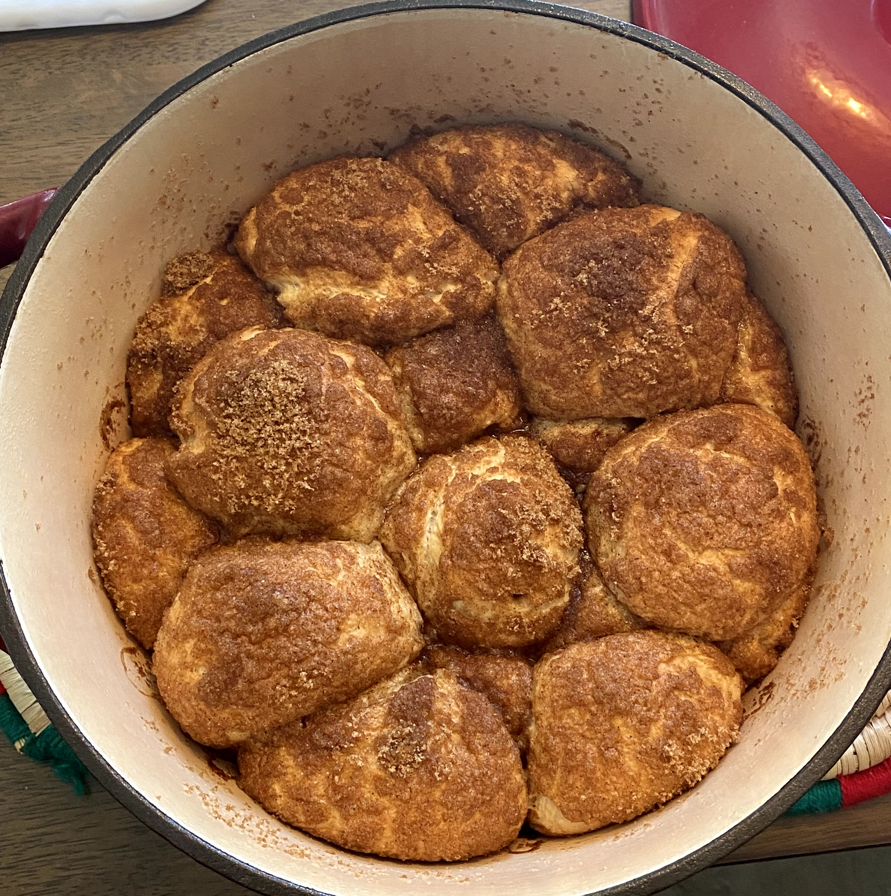

Description
*Excerpt from Binging with Babish website*
Monkey bread goes by many different names: bubble loaf, sticky bread, pinch-me cake,
and countless others. But as Shakespeare once wrote… a monkey bread by any other name
would smell as sweet.
Ingredients
- 500 g bread flour
- 7 g instant dry yeast
- 170 g granulated sugar, divided + more for the pan
- 100 g whole milk, warm (~85°F)
- 200 g water, warm (~85°F)
- 10 g kosher salt
- 85 g unsalted butter, cubed + very soft (~75-80°F)
- As needed non-stick spray
- 200 g brown sugar
- 2 Tbsp cinnamon
Method
- Combine the flour, yeast, and 50 grams of sugar in the bowl of a stand mixer.
- Evenly combine the dry ingredients using a whisk or fork.
- Add the milk, water, and salt to the bowl. With the mixer fitted with a dough hook attachment, combine the dough on medium-low speed until almost homogeneous.
- Begin adding the butter, one cube at a time, and waiting until each cube is incorporated before adding another one until all of the butter has been added.
- Increase the speed to medium-high and mix until the dough is smooth, elastic, and clears the sides of the bowl, about 4-5 minutes.
- Transfer the dough to a large greased bowl and cover it with plastic wrap.
- Let the dough proof until about doubled in size, about 1-2 hours depending on the warmth of the room.
- Meanwhile, grease 1 large tube or bundt pan or loaf pan or muffin tin generously with non-stick spray.
- In a small bowl, combine the remaining 120 grams of granulated sugar, brown sugar, and cinnamon. Whisk to combine.
- Remove the dough from the bowl and place it on a lightly oiled work surface. Divide and shape the dough into even golf-ball-sized portions.*If using a muffin tin, make portions half the size.
- Roll the dough balls in the melted butter and then in the cinnamon-sugar mixture. Place them into the prepared baking pan(s).
- Loosely cover the pan(s), and allow the dough to proof for another 45 minutes - 1 hour, until puffed.
- Meanwhile, preheat the oven to 350 °F.
- Once risen, remove the plastic wrap from the pan(s). Brush the dough with any remaining cinnamon-sugar mixture.
- Bake the monkey bread for 30-35 minutes, turning halfway through, until the dough is cooked through (200-205 °F) and golden brown on top.
- Allow the bread to cool for 10 minutes, then flip it onto a serving platter of your choice.